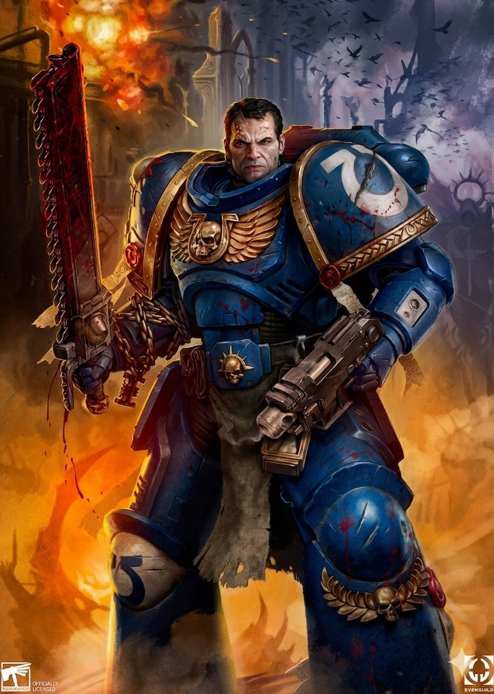
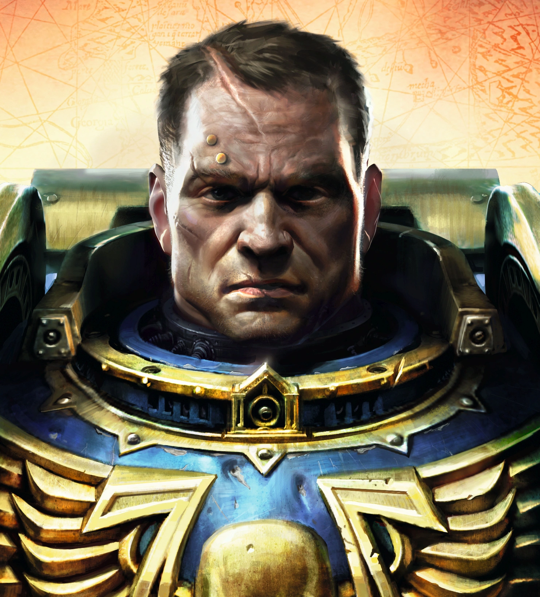
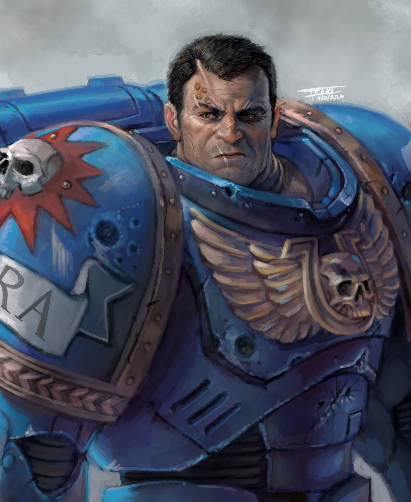

DEMETRIAN TITUS
Tenente dos Ultramarines • Veterano das Guerras Tiranidas • Ex-Capitão da 2ª Companhia

Origem
Demetrian Titus é um lendário guerreiro dos Ultramarines, um símbolo vivo de honra, força e resistência inabalável. Seu passado como Capitão da 2ª Companhia foi marcado por vitórias impossíveis, como a defesa solitária do Mundo-Forja de Graia contra a Waaagh! do Ork Grimskull e a subsequente invasão demoníaca do Lorde do Caos Nemeroth.
No entanto, sua glória cobrou um preço alto. Suspeito de heresia pelo Inquisidor Thrax e delatado pelo seu próprio subordinado, o dogmático Leandros, Titus foi aprisionado. Suportando mais de um século de tortura física e interrogatórios cruéis pela Inquisição, ele nunca quebrou seu juramento ao Imperador. Eventualmente libertado para servir como um Escudo Negro (Black Shield) na Deathwatch, ele buscou redenção anônima na morte alienígena.
Mas seu destino era Ultramar. Após um confronto brutal contra a invasão Tiranida no Sistema Recidious, o ferido Titus foi resgatado pelo Lorde Marneus Calgar. Para sobreviver aos ferimentos catastróficos, Titus foi submetido ao Rubicon Primaris, renascendo como um Tenente Primaris. Hoje, ele luta para expurgar não apenas as ameaças xenos, mas a desconfiança que paira sobre seu nome entre seus próprios irmãos de batalha.

Credo de Guerra
"O Codex Astartes é um conjunto de regras. Elas nos guiam, moldam nossas táticas... mas não devem ser amarras. O verdadeiro teste de um guerreiro é quando ele age onde o Codex se cala."
Titus se destaca entre os filhos de Guilliman pela sua flexibilidade tática. Enquanto muitos Ultramarines veem o Codex Astartes como um texto religioso inflexível, Titus o enxerga de forma pragmática, acreditando que a intuição, a adaptação e o sacrifício pessoal são fundamentais para a vitória quando a teoria militar falha.
Essa abordagem criativa, embora tenha salvo inúmeros planetas, foi a própria raiz das acusações de heresia que destruíram sua ascensão. Mesmo assim, Titus recusa-se a mudar quem é. Ele lidera pelo peso de sua experiência inigualável, lançando-se sempre ao coração do fogo cruzado e protegendo os mais fracos.
Ele não exige obediência cega; ele conquista a lealdade de seus esquadrões inspirando coragem, demonstrando um controle emocional sombrio e agindo como a vanguarda inflexível da Ira do Imperador.
Capacidade Bélica
- Armamento Pessoal: Um mestre absoluto do combate a curta e média distância, destripando inimigos com uma Espada-Serra (Chainsword) revigorada ou com o campo disruptivo de uma Espada de Energia.
- Domínio do Bolter: Utiliza o letal Rifle Bolter Automático ou a Pistola Bolter Pesada para abrir brechas nas linhas inimigas antes do choque corporal.
- Tenente Primaris: Aprimorado pela tecnologia Cawl no Rubicon Primaris, seu corpo possui órgãos extras e força esmagadora, vestido em uma Armadura Mark X Tacticus altamente modular.
- Resistência à Disformidade: Titus demonstrou ao longo da vida uma misteriosa e inata resistência à corrupção da Disformidade (the Warp), um traço que o ajuda a caçar Feiticeiros do Caos, mas atrai olhares suspeitos da Inquisição.
- Táticas da Deathwatch: Sua passagem como Escudo Negro concedeu a ele um conhecimento enciclopédico sobre a biologia e as táticas furtivas de todas as raças xenos, o tornando um aniquilador de Tyranids.
Localização Atual: Setor Recidious / Frentes da Cruzada Indomitus
Status: Ativo - Servindo como Tenente sob o comando do Capitão Acheran, aniquilando hordas Tyranidas e Caóticas.
